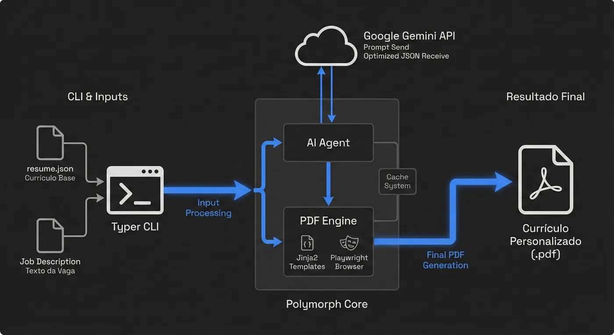

Individual · Ferramenta própriaSolo · Personal tool
PolyMorph
CLI que adapta meu currículo ao texto de cada vaga, sem inventar nada.A CLI that tailors my résumé to each job posting without making anything up.
ProblemaProblem
Sistemas de triagem (ATS) descartam currículos que não trazem as palavras-chave exatas da vaga, mesmo quando a pessoa tem a experiência. Adaptar o currículo à mão para cada vaga toma tempo, e eu precisava fazer isso com frequência.
Applicant tracking systems (ATS) discard résumés that lack the posting's exact keywords, even when the candidate has the experience. Tailoring a résumé by hand for every job takes time, and I needed to do it often.
Como funcionaHow it works
O currículo base fica em JSON. O PolyMorph manda o texto da vaga para o Gemini, que reescreve o resumo, reordena as skills e ajusta o vocabulário das experiências. Depois, o Playwright gera o PDF. O modo batch processa uma pasta inteira de vagas de uma vez.
The base résumé is stored as JSON. PolyMorph sends the job posting to Gemini, which rewrites the summary, reorders the skills and adjusts the wording of each experience. Then Playwright renders the PDF. batch mode processes a whole folder of postings at once.

Decisões técnicasTechnical decisions
- Nada é inventado: o prompt limita o modelo ao que já está no JSON. Numa vaga de backend, o Docker subiu da 4ª para a 2ª posição nas skills, mas nenhuma skill nova apareceu.
- Cache MD5: o hash do texto da vaga é a chave do cache, então processar a mesma vaga de novo não gasta tokens.
- Resiliência ao erro 429: quando a cota do plano gratuito estoura, o script espera
20s × tentativae tenta de novo, até 3 vezes.
- Nothing is invented: the prompt restricts the model to what's already in the JSON. For a backend posting, Docker moved from 4th to 2nd in the skills list, but no new skills appeared.
- MD5 cache: the hash of the posting is the cache key, so reprocessing the same job costs no tokens.
- 429 resilience: when the free-tier quota runs out, the script waits
20s × attemptand retries, up to 3 times.
ResultadoOutcome
Uso o PolyMorph nas minhas próprias candidaturas.
I use PolyMorph for my own applications.
TODO Números de uso, se houver.
TODO Usage numbers, if any.